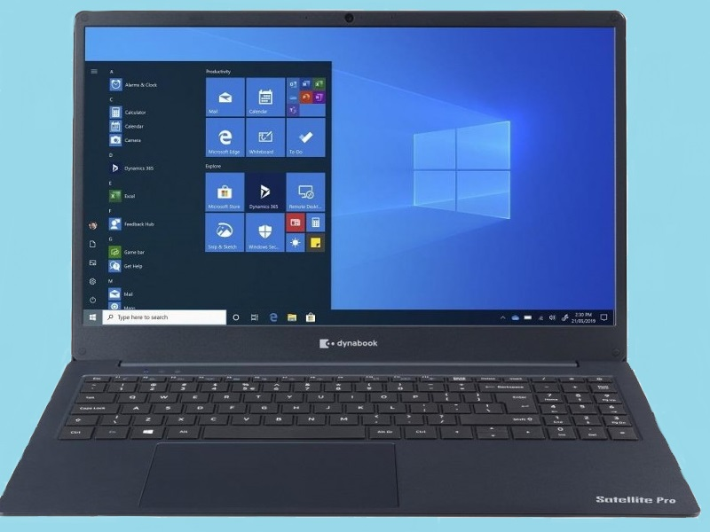

| Ekran | 15.6" / 1920 x 1080px / AntiGlare | Procesor | Intel Core i3-1005G1 (1200 – 3400MHz) / 2/4 (fizičke/logičke) / 4096KB |
|---|---|
| Memorija | 8GB DDR4 (#200Mhz) |
| Hard disk | 256GB SSD |
| Grafička karta | Intel UHD Graphics G1 (Ice Lake 32 EU) |
| Operativni sistem | Windows 10 Home |
| Portovi | LAN, HDMI, USB 3.0 x2, Audio/Mic Combo Jack |
| Multimedija | OPTIKA: Ne, AUDIO: Stereo zvucnik, KAMERA: Da |
| Povezivanje | LAN: Da, BLUETOOTH: Da, WI-FI: Da |
| Težina | 1.79kg |
| Boja | Plava |
| Ostalo | Fingerprint |